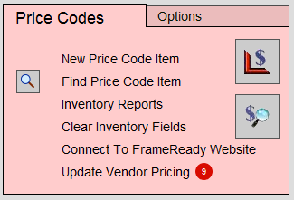
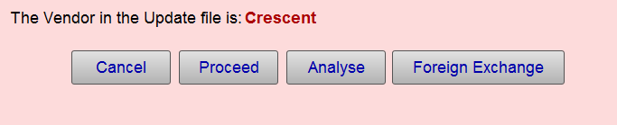
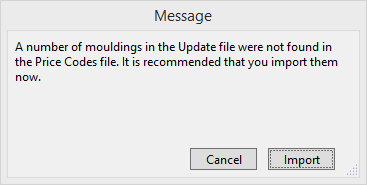
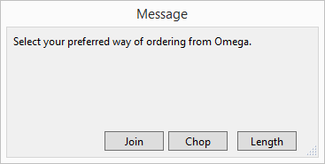
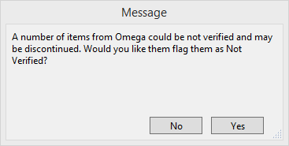

Update Vendor Pricing
Automated Updates with an Active FrameReady Subscription
Important! Always check with your sales rep before discarding corner samples or deleting discontinued items from your Price Codes file.
-
The easiest and most efficient way of performing vendor pricing updates is to have internet service at your shop.
-
If you have high speed broadband internet access (DSL, fiber or cable), then these updates are available directly from the FrameReady Main Menu, as long as you are online.
-
The Vendor Update process is automated but not automatic: you are still required to click the Update Vendor Pricing button, choose a vendor to begin the download, etc.
Before You Begin
-
If your FrameReady Subscription has expired, then you will be alerted and denied direct access to updating your vendors.
-
An option is available from the Main Menu > Price Codes area > Options tab to turn off the auto-check for vendor updates when starting FrameReady; this may help FrameReady open faster.
-
The courtesy indicator displayed as a red circle, with the number of available vendor updates, only appears when this option is enabled (a functional internet connect is also required).
A second red circle, to the right of the first, if visible, indicates that a new Vendor Matrix file is available (the number in the circle indicates the total number of records; not the number of updates).

How to do an Automated Vendor Price Update
-
On the Main Menu, in the Price Codes section (lower right), click the Update Vendor Pricing button.

-
The Vendor Update Screen appears.
By default, your installed vendors are listed, i.e. the My Vendors tab.
If there is a problem with your internet connection, then a "File Not Found" message appears.
Your vendor list appears in the My Vendors tab; check to see if all of your vendors are installed.

-
If you wish to add a vendor, then see: Add a New Vendor.
-
Vendors with an update available are marked with an X and are listed in bold.
Alternately, you can open the New Updates tab and see only your installed vendors that have an update. -
A green Options button indicates that it has custom Vendor Update Options. These settings are used when you perform a standalone vendor update (such as importing new items, printing lists, etc.)
A grey Options button has no custom settings. -
Single-click the vendor you wish to update.
You will not see Steps 9 - 11 if the Options button is green. -
A dialog box appears, giving you the option to Cancel, Proceed, Analyse, or Foreign Exchange.

-
Click the Proceed button.
To reset the Vendor Items, see: Reset all Vendor Items -
If the update contains new moulding, then you are asked to import them (click Import) and select the preferred method of pricing: Join, Chop or Length.


-
After downloading the latest prices, FrameReady automatically checks for possible "discontinued items that have not been verified," meaning it looks for those items in your Price Codes file that could not be found in the new update file. You then have the option to identify them as Not Verified in the system. If yes, then the Validation field in the Price Codes file is set to Not Verified.

-
During the update procedure, a list of Not Verified items may be printed, as these may be discontinued and the corner samples may need to be removed. Or, if you downloaded a new vendor, a report of New Items added may be printed.
Tip: When is a Not Verified item not discontinued? When the moulding or mat board is still valid but the number was changed. For example, if the moulding manufacturer changed the moulding number from 12345 to 123-45.
-
If you still have inventory in stock, then it is recommended that you NOT remove the Item number from the database until all your inventory is sold.
When a discontinued item is entered onto a custom framing order, the term Discontinued appears in the Description field (even though, in the Price Codes file, the Description still says the original, e.g. 3/4 oak ). The framer may then check to see if there is enough material to complete the order.
Important! Always check with your sales rep before discarding corner samples or deleting discontinued items from your Price Codes file.
-
When the process has finished, a message appears that the update is complete. Return to the Vendor Update screen and update the next vendor.
The Vendor Update process is automated but not automatic: you are still required to click the Update Vendor Pricing button, choose a vendor to begin the download, etc.
© 2023 Adatasol, Inc.